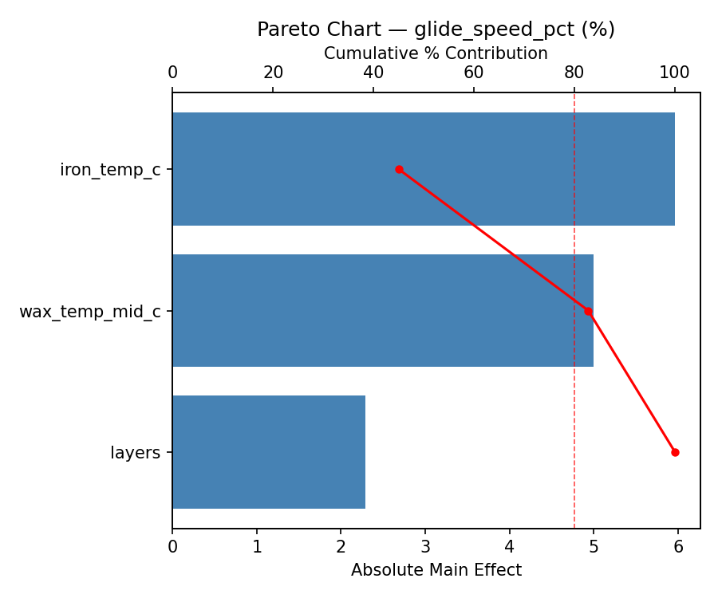
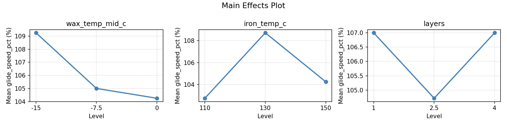
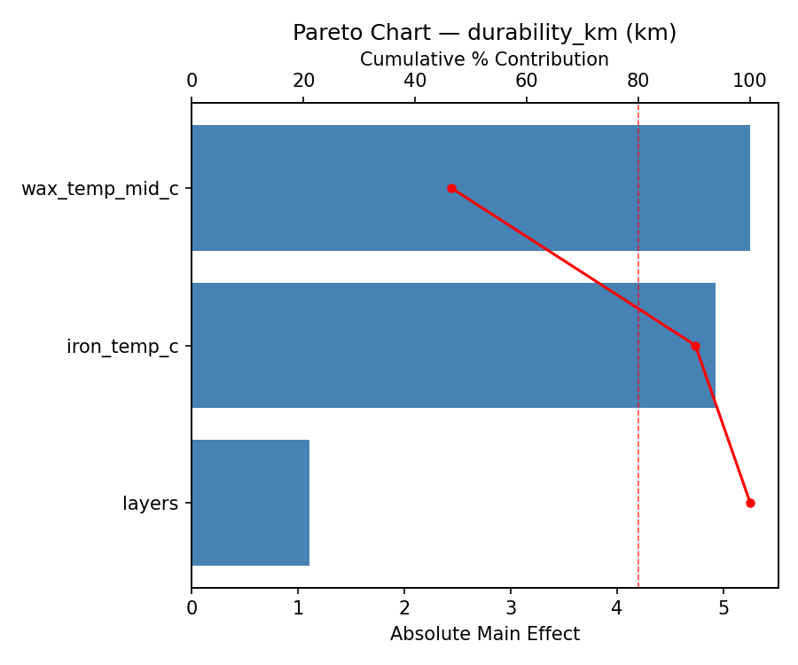
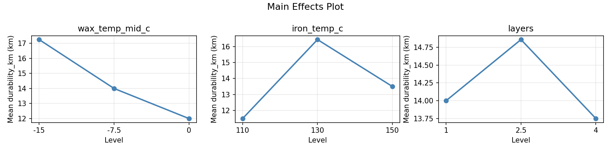
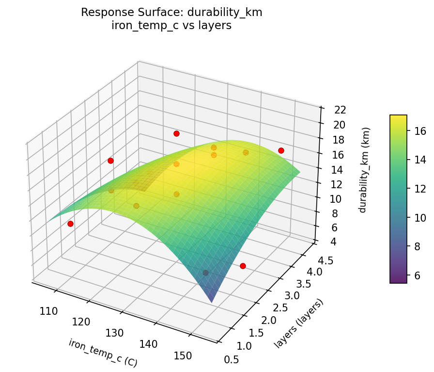
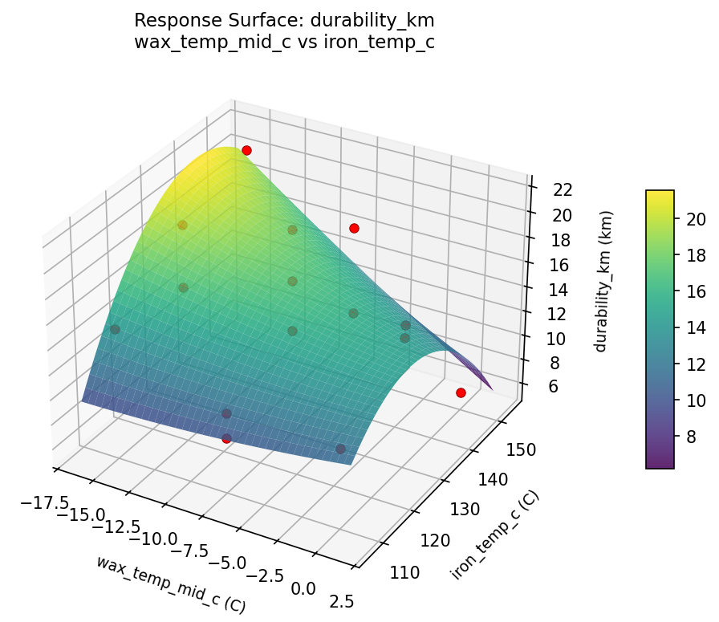
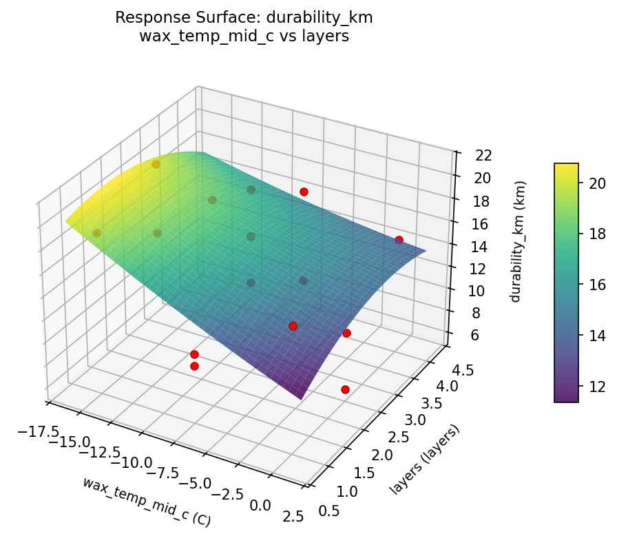
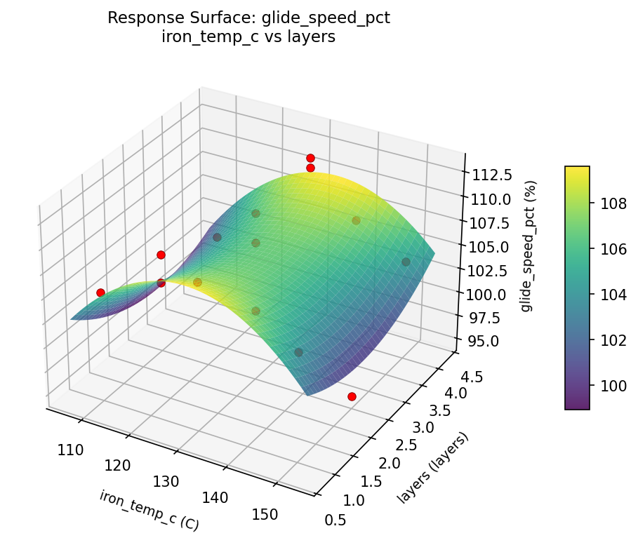
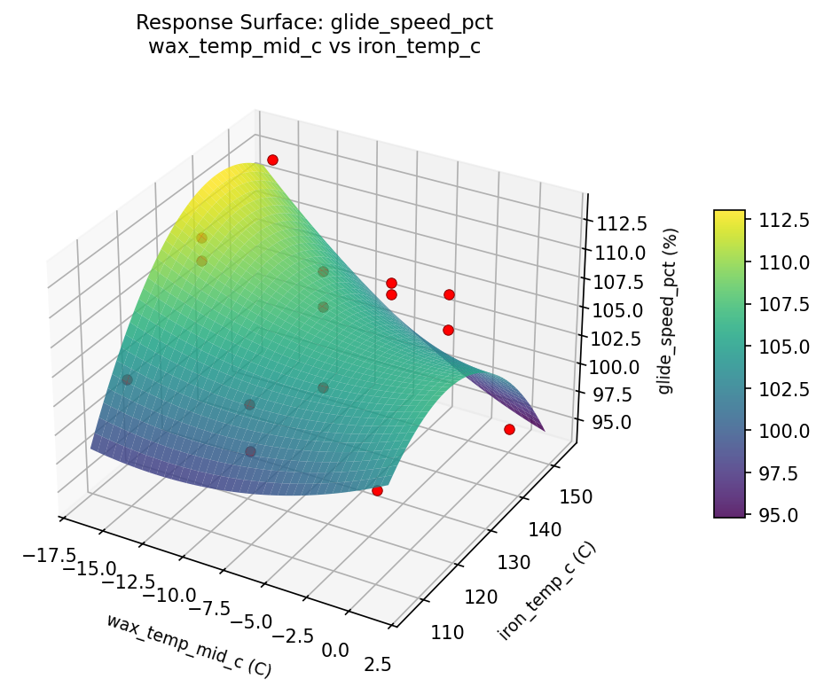
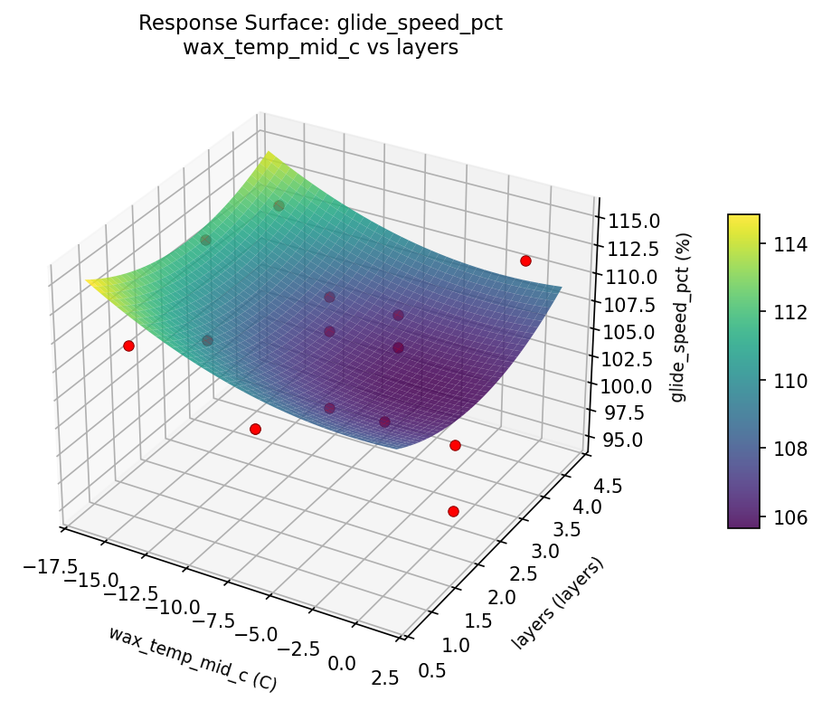

Summary
This experiment investigates ski wax temperature match. Box-Behnken design to maximize glide speed and minimize drag by tuning wax temperature range, iron temperature, and number of wax layers.
The design varies 3 factors: wax temp mid c (C), ranging from -15 to 0, iron temp c (C), ranging from 110 to 150, and layers (layers), ranging from 1 to 4. The goal is to optimize 2 responses: glide speed pct (%) (maximize) and durability km (km) (maximize). Fixed conditions held constant across all runs include snow temp = -8C, ski base = sintered.
A Box-Behnken design was chosen because it efficiently fits quadratic models with 3 continuous factors while avoiding extreme corner combinations — requiring only 15 runs instead of the 8 needed for a full factorial at two levels.
Quadratic response surface models were fitted to capture potential curvature and factor interactions. The RSM contour plots below visualize how pairs of factors jointly affect each response.
Key Findings
For glide speed pct, the most influential factors were iron temp c (45.0%), wax temp mid c (37.7%), layers (17.3%). The best observed value was 113.0 (at wax temp mid c = 0, iron temp c = 150, layers = 2.5).
For durability km, the most influential factors were wax temp mid c (46.5%), iron temp c (43.7%), layers (9.8%). The best observed value was 21.0 (at wax temp mid c = -15, iron temp c = 150, layers = 2.5).
Recommended Next Steps
- Run confirmation experiments at the predicted optimal settings to validate the model.
- Consider whether any fixed factors should be varied in a future study.
Experimental Setup
Factors
| Factor | Low | High | Unit |
|---|
wax_temp_mid_c | -15 | 0 | C |
iron_temp_c | 110 | 150 | C |
layers | 1 | 4 | layers |
Fixed: snow_temp = -8C, ski_base = sintered
Responses
| Response | Direction | Unit |
|---|
glide_speed_pct | ↑ maximize | % |
durability_km | ↑ maximize | km |
Configuration
{
"metadata": {
"name": "Ski Wax Temperature Match",
"description": "Box-Behnken design to maximize glide speed and minimize drag by tuning wax temperature range, iron temperature, and number of wax layers"
},
"factors": [
{
"name": "wax_temp_mid_c",
"levels": [
"-15",
"0"
],
"type": "continuous",
"unit": "C"
},
{
"name": "iron_temp_c",
"levels": [
"110",
"150"
],
"type": "continuous",
"unit": "C"
},
{
"name": "layers",
"levels": [
"1",
"4"
],
"type": "continuous",
"unit": "layers"
}
],
"fixed_factors": {
"snow_temp": "-8C",
"ski_base": "sintered"
},
"responses": [
{
"name": "glide_speed_pct",
"optimize": "maximize",
"unit": "%"
},
{
"name": "durability_km",
"optimize": "maximize",
"unit": "km"
}
],
"settings": {
"operation": "box_behnken",
"test_script": "use_cases/213_ski_wax_selection/sim.sh"
}
}
Experimental Matrix
The Box-Behnken Design produces 15 runs. Each row is one experiment with specific factor settings.
| Run | wax_temp_mid_c | iron_temp_c | layers |
|---|
| 1 | -7.5 | 110 | 1 |
| 2 | -7.5 | 130 | 2.5 |
| 3 | 0 | 130 | 4 |
| 4 | 0 | 130 | 1 |
| 5 | -7.5 | 130 | 2.5 |
| 6 | -7.5 | 130 | 2.5 |
| 7 | -15 | 130 | 4 |
| 8 | 0 | 110 | 2.5 |
| 9 | -7.5 | 110 | 4 |
| 10 | 0 | 150 | 2.5 |
| 11 | -15 | 130 | 1 |
| 12 | -7.5 | 150 | 4 |
| 13 | -15 | 110 | 2.5 |
| 14 | -15 | 150 | 2.5 |
| 15 | -7.5 | 150 | 1 |
Step-by-Step Workflow
1
Preview the design
$ python doe.py info --config use_cases/213_ski_wax_selection/config.json
2
Generate the runner script
$ python doe.py generate --config use_cases/213_ski_wax_selection/config.json \
--output use_cases/213_ski_wax_selection/results/run.sh --seed 42
3
Execute the experiments
$ bash use_cases/213_ski_wax_selection/results/run.sh
4
Analyze results
$ python doe.py analyze --config use_cases/213_ski_wax_selection/config.json
5
Get optimization recommendations
$ python doe.py optimize --config use_cases/213_ski_wax_selection/config.json
6
Generate the HTML report
$ python doe.py report --config use_cases/213_ski_wax_selection/config.json \
--output use_cases/213_ski_wax_selection/results/report.html
Features Exercised
| Feature | Value |
|---|
| Design type | box_behnken |
| Factor types | continuous (all 3) |
| Arg style | double-dash |
| Responses | 2 (glide_speed_pct ↑, durability_km ↑) |
| Total runs | 15 |
Analysis Results
Generated from actual experiment runs using the DOE Helper Tool.
Response: glide_speed_pct
Top factors: iron_temp_c (45.0%), wax_temp_mid_c (37.7%), layers (17.3%).
Pareto Chart

Main Effects Plot

Response: durability_km
Top factors: wax_temp_mid_c (46.5%), iron_temp_c (43.7%), layers (9.8%).
Pareto Chart

Main Effects Plot

Response Surface Plots
3D surfaces fitted with quadratic RSM. Red dots are observed data points.
durability km iron temp c vs layers

durability km wax temp mid c vs iron temp c

durability km wax temp mid c vs layers

glide speed pct iron temp c vs layers

glide speed pct wax temp mid c vs iron temp c

glide speed pct wax temp mid c vs layers

Full Analysis Output
RSM surface: rsm_glide_speed_pct_wax_temp_mid_c_vs_iron_temp_c.png
RSM surface: rsm_glide_speed_pct_wax_temp_mid_c_vs_layers.png
RSM surface: rsm_glide_speed_pct_iron_temp_c_vs_layers.png
RSM surface: rsm_durability_km_wax_temp_mid_c_vs_iron_temp_c.png
RSM surface: rsm_durability_km_wax_temp_mid_c_vs_layers.png
RSM surface: rsm_durability_km_iron_temp_c_vs_layers.png
=== Main Effects: glide_speed_pct ===
Factor Effect Std Error % Contribution
--------------------------------------------------------------
iron_temp_c 5.9643 1.3146 45.0%
wax_temp_mid_c 5.0000 1.3146 37.7%
layers 2.2857 1.3146 17.3%
=== Summary Statistics: glide_speed_pct ===
wax_temp_mid_c:
Level N Mean Std Min Max
------------------------------------------------------------
-15 4 109.2500 3.8622 104.0000 113.0000
-7.5 7 105.0000 3.6056 101.0000 111.0000
0 4 104.2500 7.7190 95.0000 112.0000
iron_temp_c:
Level N Mean Std Min Max
------------------------------------------------------------
110 4 102.7500 2.0616 101.0000 105.0000
130 7 108.7143 3.6839 101.0000 112.0000
150 4 104.2500 7.3655 95.0000 113.0000
layers:
Level N Mean Std Min Max
------------------------------------------------------------
1 4 107.0000 2.3094 105.0000 109.0000
2.5 7 104.7143 6.3434 95.0000 113.0000
4 4 107.0000 5.3541 101.0000 112.0000
=== Main Effects: durability_km ===
Factor Effect Std Error % Contribution
--------------------------------------------------------------
wax_temp_mid_c 5.2500 1.1325 46.5%
iron_temp_c 4.9286 1.1325 43.7%
layers 1.1071 1.1325 9.8%
=== Summary Statistics: durability_km ===
wax_temp_mid_c:
Level N Mean Std Min Max
------------------------------------------------------------
-15 4 17.2500 3.3040 14.0000 21.0000
-7.5 7 14.0000 4.4347 9.0000 21.0000
0 4 12.0000 4.5461 6.0000 16.0000
iron_temp_c:
Level N Mean Std Min Max
------------------------------------------------------------
110 4 11.5000 2.5166 9.0000 15.0000
130 7 16.4286 2.8200 13.0000 21.0000
150 4 13.5000 6.7577 6.0000 21.0000
layers:
Level N Mean Std Min Max
------------------------------------------------------------
1 4 14.0000 4.2426 10.0000 19.0000
2.5 7 14.8571 5.4292 6.0000 21.0000
4 4 13.7500 3.4034 9.0000 17.0000
Pareto chart (glide_speed_pct): use_cases/213_ski_wax_selection/results/analysis/pareto_glide_speed_pct.png
Pareto chart (durability_km): use_cases/213_ski_wax_selection/results/analysis/pareto_durability_km.png
Main effects (glide_speed_pct): use_cases/213_ski_wax_selection/results/analysis/main_effects_glide_speed_pct.png
Main effects (durability_km): use_cases/213_ski_wax_selection/results/analysis/main_effects_durability_km.png
Optimization Recommendations
=== Optimization: glide_speed_pct ===
Direction: maximize
Best observed run: #12
wax_temp_mid_c = 0
iron_temp_c = 150
layers = 2.5
Value: 113.0
RSM Model (linear, R² = 0.0723, Adj R² = -0.1807):
Coefficients:
intercept +105.9333
wax_temp_mid_c -1.0000
iron_temp_c +0.6250
layers +1.3750
RSM Model (quadratic, R² = 0.4400, Adj R² = -0.5681):
Coefficients:
intercept +104.0000
wax_temp_mid_c -1.0000
iron_temp_c +0.6250
layers +1.3750
wax_temp_mid_c*iron_temp_c +1.5000
wax_temp_mid_c*layers +2.5000
iron_temp_c*layers -0.2500
wax_temp_mid_c^2 +4.8750
iron_temp_c^2 +0.1250
layers^2 -1.3750
Curvature analysis:
wax_temp_mid_c coef=+4.8750 convex (has a minimum)
layers coef=-1.3750 concave (has a maximum)
iron_temp_c coef=+0.1250 convex (has a minimum)
Notable interactions:
wax_temp_mid_c*layers coef=+2.5000 (synergistic)
wax_temp_mid_c*iron_temp_c coef=+1.5000 (synergistic)
Predicted optimum (from linear model):
wax_temp_mid_c = -15
iron_temp_c = 130
layers = 4
Predicted value: 108.3083
Model quality: Weak fit — consider adding center points or using a different design.
Factor importance:
1. wax_temp_mid_c (effect: 6.0, contribution: 57.8%)
2. layers (effect: 3.1, contribution: 30.1%)
3. iron_temp_c (effect: 1.2, contribution: 12.1%)
=== Optimization: durability_km ===
Direction: maximize
Best observed run: #3
wax_temp_mid_c = -15
iron_temp_c = 150
layers = 2.5
Value: 21.0
RSM Model (linear, R² = 0.0650, Adj R² = -0.1900):
Coefficients:
intercept +14.3333
wax_temp_mid_c -1.2500
iron_temp_c +0.2500
layers -0.7500
RSM Model (quadratic, R² = 0.6801, Adj R² = 0.1042):
Coefficients:
intercept +10.3333
wax_temp_mid_c -1.2500
iron_temp_c +0.2500
layers -0.7500
wax_temp_mid_c*iron_temp_c +0.5000
wax_temp_mid_c*layers +1.0000
iron_temp_c*layers +2.0000
wax_temp_mid_c^2 +5.8333
iron_temp_c^2 +2.3333
layers^2 -0.6667
Curvature analysis:
wax_temp_mid_c coef=+5.8333 convex (has a minimum)
iron_temp_c coef=+2.3333 convex (has a minimum)
layers coef=-0.6667 concave (has a maximum)
Notable interactions:
iron_temp_c*layers coef=+2.0000 (synergistic)
wax_temp_mid_c*layers coef=+1.0000 (synergistic)
wax_temp_mid_c*iron_temp_c coef=+0.5000 (synergistic)
Predicted optimum (from quadratic model):
wax_temp_mid_c = -15
iron_temp_c = 110
layers = 2.5
Predicted value: 20.0000
Model quality: Moderate fit — use predictions directionally, not precisely.
Factor importance:
1. wax_temp_mid_c (effect: 7.0, contribution: 62.3%)
2. iron_temp_c (effect: 2.2, contribution: 19.8%)
3. layers (effect: 2.0, contribution: 17.9%)